Маленькая компания на Мамае
-9-10 августа 2008 -
Из серии "Мемуары. Лето-2008"
А кто это к нам из Москвы приехал, да еще и с дрэдами ? Это же Улитка!
По такому событию маленькая компания с большими секретами пошла в горы,
чтобы отдохнуть и пообщаться :) Маринка, Ульянка и Лёшка :) Про секреты
всему свету не расскажем, потом сами увидите :)
. 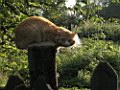
"Понаехали тут!" - ворчал мамайский кот,
разглядывая ягодников и туристов.
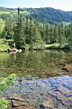
. 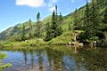
В озере Ганг всегда чистая вода и симпатишные русалки :)
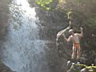
. 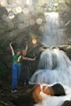
.
Водопадец. К нему нет тропы.
И никто не знает, как он называется.
Может быть придумаем?!
От водопада двигаем в Южный цирк. Месяц назад тут была отличная
тропа, но теперь она совсем заросла папоротником и ее не видно! Идем "наощупь".
Душно, жарко и мошка противная. Маринка простывшая, с температурой. В
ближайшем лесочке находим ровное место и ставим вигвам. К верхним озерам
пойдем налегке. Там озер много, но девченки сказали, что им хватит первого
попавшегося, и не важно, что оно самое маленькое, главное - правильно
отдохнуть :)
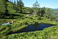
.
. 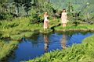
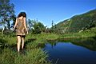
. 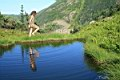
. 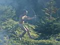
. 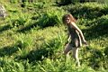
. 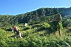
.
.
. 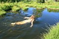
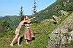
.
.
. 
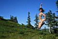
.
.
.
.
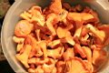
. 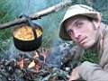
На ужин у нас было картофельное пюре с лисичками!
До полночи валялись у костра на ковриках, слушали музыку,
было тепло и клево, и в палатку идти не хотелось :)
А на завтрак - солнечное регги:
"Солнце лучами сон отогнало. Утро, жара, на полу одеяло.
В жизни своей два солнца люблю, пойду одному из них кофе сварю..."
Погода отличная, вышли неспеша, черники немного насобирали :)
Да... Душевно отдохнули. Клевые фото. Приятные воспоминания :)
.
.
А в электричке друзья-сноубордисты :)
Бек, Вова XV, Саня, Андрей с Женей, Ленка Leen, Союзник.
У каждого свой способ перезимовать лето,
кто-то в эти выхи батонил на Байкале, а кто-то строил зимовье!
.
Босиком по перрону, в платьях и с рюкзаками :)
Фото - Лёха Слюдянский, Марина Леу (Август 2008)
Комментарии - Лёха Слюдянский (Сентябрь 2008)
|